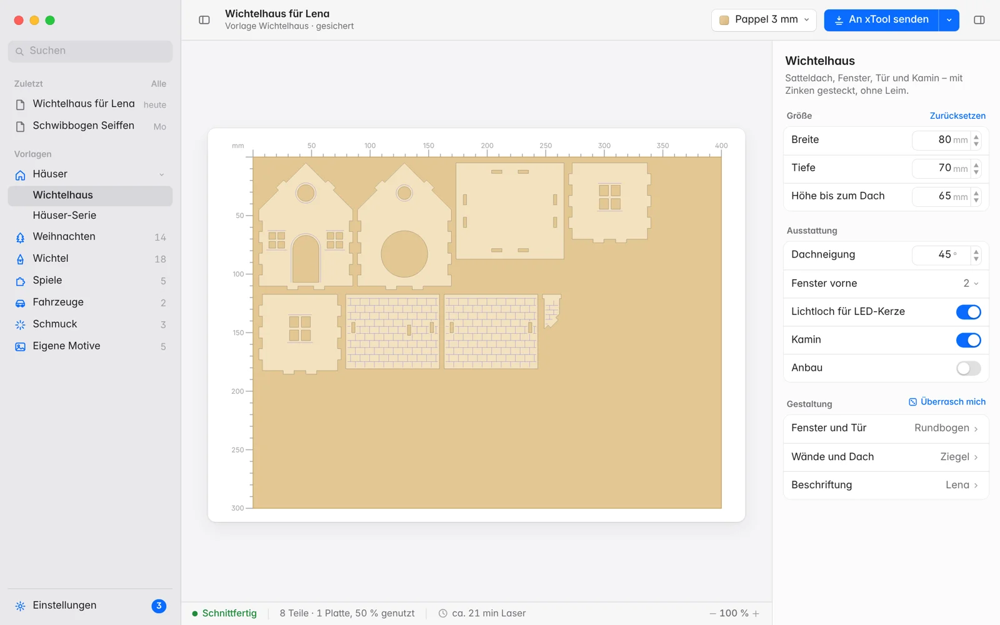
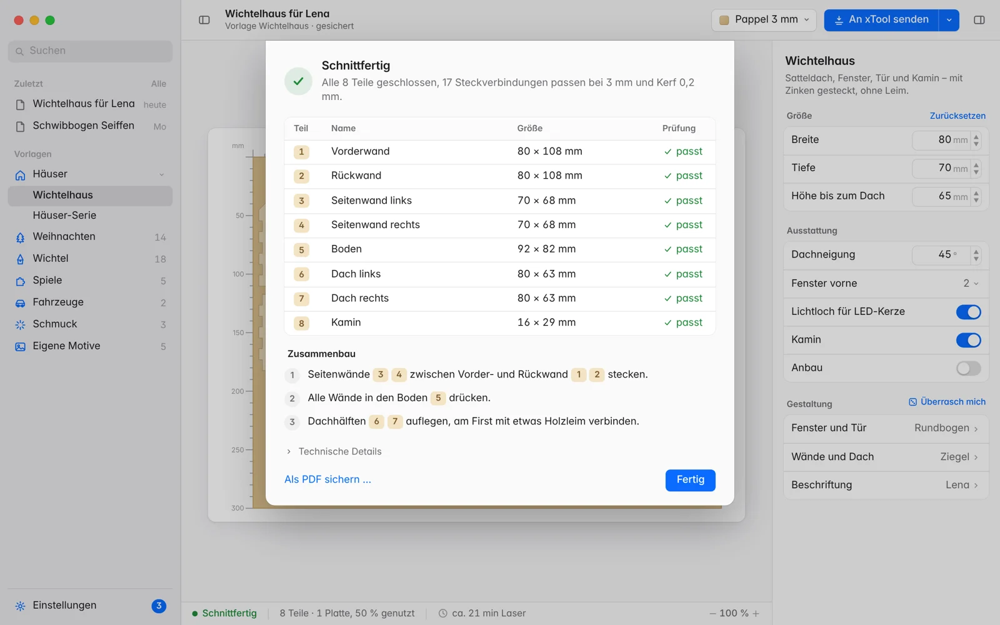
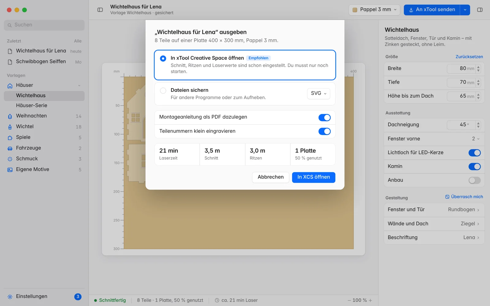

Lasercut-Vorlagen für den Mac
Vorlagen, die auf dein Holz passen.
Steckwerk rechnet Wichtelhäuser, Christbaumschmuck, Spiele und vieles mehr genau für deine Materialstärke und deinen Laser. Jede Datei wird geprüft, bevor sie geschrieben wird. Was durchgeht, passt beim ersten Schnitt.
Version {{VERSION}} · macOS 14+ · kostenlos, MIT-Lizenz

Vom Einfall zur fertigen Schnittdatei.
Kein CAD, keine Zinken von Hand. Du stellst ein, was du haben willst, Steckwerk zeichnet und prüft alle Teile und reicht sie an xTool Creative Space weiter.
Vorlage wählen und einstellen
Maße, Fenster, Gravuren und Namen ändern. Die Vorschau zeigt sofort, wie die Teile auf der Platte liegen.

Prüfbericht lesen
Jedes Teil mit Nummer, Größe und Ergebnis, dazu der Zusammenbau Schritt für Schritt.

An xTool senden
Als fertiges Projekt in xTool Creative Space öffnen, mit Ebenen für Schneiden und Ritzen. Oder SVG für jeden anderen Laser sichern.
Ein Paket je Thema.
Pakete installierst du in Steckwerk unter Einstellungen → Pakete mit einem Klick. Neue Versionen meldet Steckwerk von selbst.
Geprüft, bevor der Laser startet.
Bei einem einzigen Fehler schreibt Steckwerk gar nichts. So landet keine Datei auf dem Laser, die du hinterher wegwirfst.
- SteckungenJeder Zinken findet seinen Schlitz, Breite und Tiefe passen zur Materialstärke.
- KerfDie Schnittbreite ist eingerechnet, damit Steckungen stramm sitzen und nicht wackeln.
- StegeZu dünne Stellen, die beim Schneiden brechen oder verbrennen würden, fallen auf.
- KonturenJede Schnittlinie ist geschlossen und schneidet sich nicht selbst.
- PlatteAlles passt auf die Arbeitsfläche, sonst verteilt Steckwerk die Teile auf mehrere Platten.
Laden und loslegen.
Steckwerk läuft komplett auf deinem Rechner, ohne Konto und ohne Cloud, auch auf älteren Macs.
Empfohlen
Steckwerk Desktop
Die native Mac-App. Ab macOS 14, für Apple-Chips und Intel. Updates für Programm und Pakete kommen direkt in der App.
Für macOS ladenIm Browser
Browser-Oberfläche
Für Windows, Linux und ältere Macs. Braucht Python 3.8 oder neuer und startet mit python3 webui.py.
Selbst bauen
Eigene Pakete
Ein Paket ist ein Ordner mit etwas Python. Schritt für Schritt vom ersten Modell bis zum fertigen Paket.
So baust du ein Paket